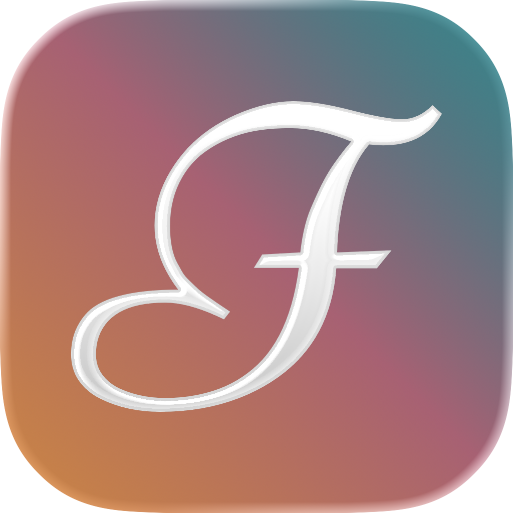
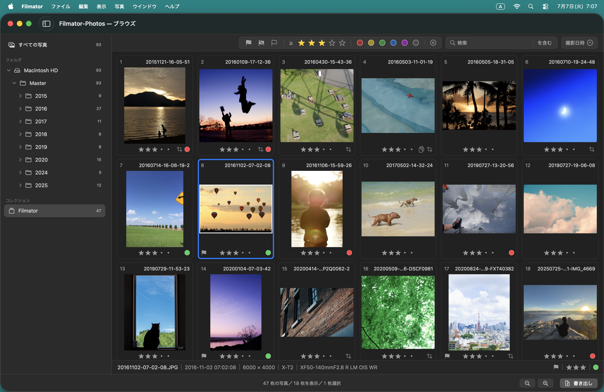
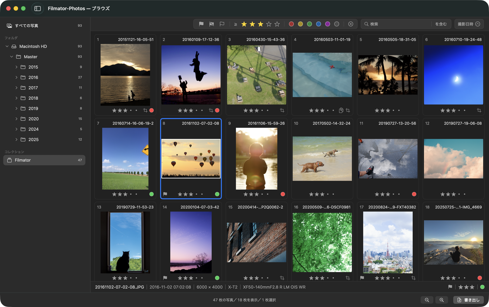
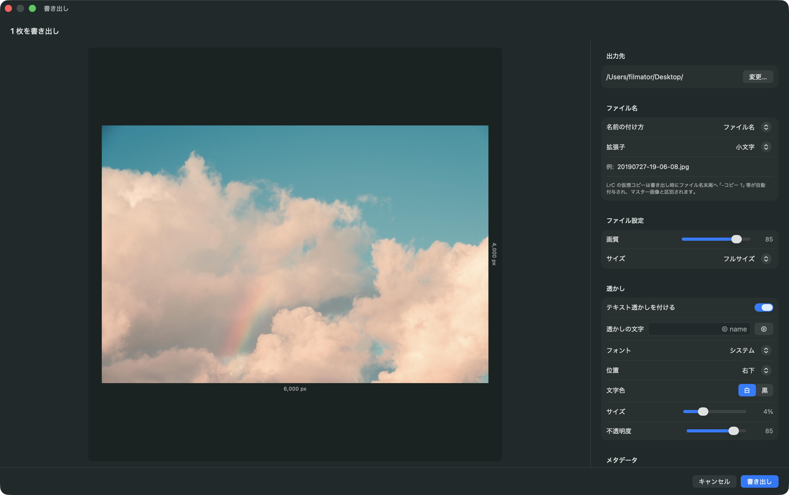

カタログを読み取り専用で参照
Lightroom Classic のカタログ（.lrcat）を読み取り専用で開きます。カタログには一切書き込まず、Lightroom Classic 側には影響を及ぼしません。

Filmator は、撮影者の意図とカメラの絵作りが込められた JPEG を活かして、作品として仕上げる Mac 用アプリです。
Lightroom Classic のカタログを使って写真を選び、必要な基本補正を加えて書き出せます。

シャッターを切った瞬間の光、意図、カメラの絵作り。それらが一つになって、JPEG として記録されています。Filmator が向き合うのは、その一枚に込められた撮影時の表現。名前に込めた“Film”は、その一枚をデジタル時代のフィルムのように扱い、作品として仕上げるという考え方を表しています。
Workflow
Lightroom Classic で写真を読み込み、整理し、構図と向きを整えます。Filmator でそのカタログを開くと、フォルダやコレクションがそのまま表示されます。カメラが生成した JPEG を元に書き出せます。
写真を読み込み、いつものカタログで管理します。RAW + JPEG のペアも、単体 JPEG や HEIF も、Lightroom Classic 側の流れはそのままです。
フラグ、レーティング、カラーラベルで、写真を整理します。
必要に応じて、トリミング、傾き、向き、Upright を Lightroom Classic 側で設定します。
変更内容を Filmator で読み込めるように、Lightroom Classic でカタログを閉じて保存します。
Filmator でカタログを開くと、整理したフォルダやコレクションが反映されます。そこから写真を選び、必要な補正を加えて書き出します。
Filmator は、Lightroom Classic のカタログを読み取り専用で開きます。RAW ファイルは使用せず、対応する JPEG / HEIF / iPhone DNG 埋め込みの JPEG を参照します。元の写真ファイルにもカタログにも変更を加えないため、いつもの Lightroom Classic の管理をそのまま保てます。
Features
ブラウズ

Lightroom Classic のカタログ（.lrcat）を読み取り専用で開きます。カタログには一切書き込まず、Lightroom Classic 側には影響を及ぼしません。
Lightroom Classic で付けたフラグ、レーティング、カラーラベルを読み込み、Filmator 上でもフィルタリングできます。いつもの選別から、そのまま書き出しへ進めます。
RAW + JPEG ペアの JPEG、単体の JPEG / HEIF、iPhone DNG 埋め込みの JPEG に対応し、表示・編集・書き出しができます。RAW 現像や PNG / TIFF には対応していません。
エディット

カメラが生成した JPEG そのものを参照。FUJIFILM のフィルムシミュレーションなど、カメラの色をそのまま活かせます。
Lightroom Classic で決めたトリミング、傾き補正、向き、Upright を、JPEG に対して自動的に反映します。
ホワイトバランス、トーン、彩度などを調整できます。Core Image を使用し、軽快なライブビューや高画質な編集を行えます。
書き出し

ブラウズ画面・エディット画面から写真を選んで書き出し。1 枚でも複数枚でも同じ流れで書き出せます。
出力先、ファイル名、画質・サイズ、透かし、メタデータなど設定でき、作品作りをサポートします。
写真やカタログの内容を外部へ送信せず、すべての機能がオフラインで動作します。匿名の利用統計も、設定でオフにできます。
Plans
累計 100 枚まで、機能的な制限なく写真を書き出すことができます。Lightroom Classic のカタログを開き、Filmator の機能をご利用ください。
一度の購入で、書き出し枚数の制限が無くなります。多くの写真を取り扱う場合は、Pro プランをご利用ください。
Support
Filmator の使い方、対応形式、料金などについて、よくある質問をまとめました。
Filmator（フィルメーター）は、Film + -ator から作った名前です。フィルム風の加工ではなく、撮影した時の光やカメラの絵作りが記録された JPEG に、デジタル時代のフィルムのような価値を見出す考え方を表しています。
いいえ。Filmator はカタログを読み取り専用で開き、一切書き込みません。Lightroom Classic 側から見ても、カタログの内容は変わりません。
いいえ。Filmator は RAW ファイルを使用せず、対応する JPEG / HEIF / iPhone DNG 埋め込みの JPEG を参照します。RAW 現像を行うアプリではありません。
いいえ。Filmator は元の写真ファイルを直接変更しません。編集内容は Filmator 上の設定として扱い、書き出し時に新しいファイルとして出力します。
反映するのは、トリミング、傾き、向き、Upright などの構図・向きに関わる情報です。明るさや色などの現像パラメータは反映しません。
いいえ。構図や向きは Lightroom Classic 側で設定します。Filmator は、カタログに保存されたそれらの情報を読み込み、書き出しに反映します。
RAW + JPEG ペアの JPEG、単体の JPEG、HEIF、iPhone DNG 埋め込みの JPEG に対応しています。RAW 現像や PNG / TIFF の書き出しには対応していません。
はい。すべての機能がオフラインで動作します。写真やカタログの内容を外部へ送信することはありません。
ご質問、不具合のご報告、プライバシーに関するお問い合わせは、メールでご連絡ください。 contact@juno.tokyo
Privacy
Filmator は、写真とカタログの内容を外部へ送信しません。
Filmator は、写真ファイル（RAW・JPEG・HEIF）と Lightroom Classic のカタログを、お使いのデバイス内で処理します。カタログは読み取り専用で参照し、書き込みは一切行いません。写真や画像の内容、編集結果、ファイル名、カタログの内容（フォルダ・コレクション・レーティング・撮影日時・カメラ機種など）をサーバーへ送信することはありません。
アプリの品質改善と機能ニーズ把握のため、アプリ起動、カタログを開く、編集の利用、書き出しの回数・枚数、エラー発生状況などの匿名の利用統計・診断情報を収集する場合があります。これらには、写真、画像・カタログの内容、ファイル名、ユーザー登録情報、広告識別子は含まれません。利用状況データの送信は、アプリの設定でオフにできます。オフラインでも Filmator は利用できます。
プロモーションコードを利用する場合のみ、入力されたコードを検証用エンドポイントへ送信します。コードは個人を特定するものではありません。
Filmator は、第三者のトラッキング SDK を使用せず、ユーザーを他社のアプリや Web サイトをまたいで追跡することはありません。
プライバシーに関するお問い合わせは、サポートセクションに記載のメールアドレスまでご連絡ください。
最終更新日: 2026年6月28日